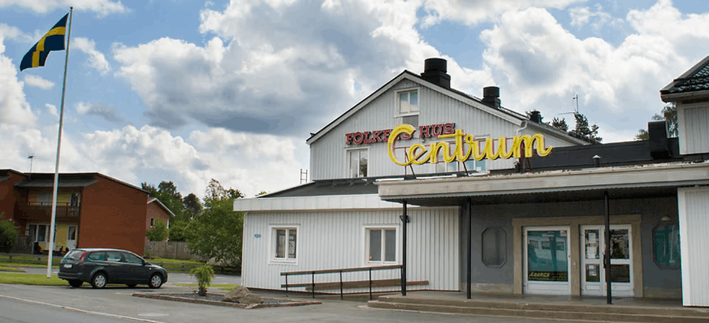

Om Folkets Hus & Historia
Någon gång på senhösten 1894 öppnades Jönköpingsbanan för trafik, vilket medförde att Vaggeryds samhälle började expandera och drev fram en omfattande industriell utveckling. I kombination med successivt förkortade arbetstider skapades nya förutsättningar för föreningsverksamhet, men det fanns ingen offentlig samlingslokal i Vaggeryd som mötte de ökade behoven.
Föreningen Framåt och byggnationen (1916–1923)
- 11 oktober 1916: Föreningen Framåt bildades med det primära syftet att uppföra en offentlig samlingslokal för ortens befolkning.
- 1921: Det bestämdes att tomten skulle röjas och stubbar brytas. Byggnadsplanerna omfattade två större lokaler (en med 400 sittplatser och en mindre med 125 sittplatser), ett kök på nedre plan, en vaktmästarbostad på övre plan samt ett uthus med vedbod, WC och pissoar.
- 1923: Ritningen av ingenjör Per Jönsson godkändes. Den 2 mars 1923 lades uppdraget ut på byggmästare Oscar Johansson för en kostnad av 17 000 kr.
Biografens start
Mot slutet av 1923 stod Föreningshuset klart. Byggnaden startade sin funktion som biograf efter att målarmästare Axelius Abrahamsson beviljats tillstånd att anordna bioföreställningar två kvällar i veckan. Det nuvarande Folkets Hus invigdes officiellt den 23 oktober 1923.
